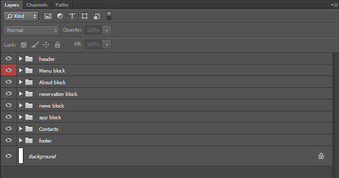

Eattie Responsive HTML5 Restaurant Template V1.2
A Beautiful Template for Your Restaurant.
Created for You by 8Guild
- Introduction
- Folders and Files
- Customizing Template
(Editing HTML Files) - Changing Look and Feel
(Editing CSS Files) - jQuery Plugins
(Editing JS Files) - Photoshop Files
- Sources and Credits
Introduction
Eattie is responsive HTML5 Restaurant Template. It comes with two options: Slideshow Background or Static Background. And to switch between them you just need to add or remove images. That simple!
Besides horizontally scrolling home page Eattie features 6 additional pages: 2 menu layouts, 2 recipes pages and 2 reviews pages.
Eattie is a tribute to modern trends in web design which incorporate following main traits:
- Flat design meaning no gradient, inner shadows or 3D effects
- Fullscreen image slideshow
- Home page horizontal scrolling navigation
- Scroll effects
- Sticky header
- Fully responsive design
Eattie has them all. Enjoy!
Folders and Files
| File Path | Description |
|---|---|
| Main | Root folder |
| Main/PSD |
PSD Folder includes all .psd files, which are: home.psd - Layered psd file of Home page; menu1.psd - Layered psd file of 1 column Menu layout (Accordion) menu2.psd - Layered psd file of 2 columns Menu layout; recipes.psd - Layered psd file of Recipes page; recipes-single.psd - Layered psd file of open recipe page; reviews.psd - Layered psd file of Reviews page; reviews-single.psd - Layered psd file of open review page; |
| Main/Eattie | This folder includes all HTML, CSS, Javascript, Fonts and Image files of the template. |
| Main/Eattie/index.html | This is Template Option Page. This page is for demonstration purpose only. If you don't need it simply remove it. |
| Main/Eattie/home-slideshow.html | Background Slideshow Version of the template. If you decided to use Background Slideshow in Intro section this file is one you want to modify. And the first step is to change it's name from home-slideshow to index.html |
| Main/Eattie/home-static.html | Static Background Version of the template. If you decided to use Static Background in Intro section this file is one you need to modify. And the first step is to change it's name from home-static to index.html. The two versions has the same structure and code, the only difference is that in home-slideshow.html we used more than 1 image in Intro section. So if you redice the number of images to 1, it will behave as static background. |
| Main/Eattie/css | This folder includes all .css files. To change the appearance of the template you need to modify files: style.css. |
| Main/Eattie/js | This folder includes all .js files. To edit Javascript functionality of the template you need to modify files: scripts-main.js for Home (Main) page AND scripts-secondary.js for Other (Secondary) pages. It also includes 2 subfolders: libs and plugins |
| Main/Eattie/js/libs | This folder includes all JavaScript Libraries files like jQuery. |
| Main/Eattie/js/plugins | This folder includes all jQuery Plugins used in this template. |
| Main/Eattie/img | This folder includes all graphic assets of the template. When you need to change images, slides, backgrounds, etc..this is the place to go. |
| Main/Eattie/fonts | This folder includes Font Awsome generated Fonts. This is iconic font, that gives you customizable vector icons (more than 350 icons). For more information on how it works, please visit Font Awsome Official Website |
Customizing Template (Editing HTML Files)
First Step
When you desided which version you are going to use, the first step to do to start customizing chosen template is to change file name from home-slideshow.html/home-static.html to index.html. This is important because when you upload your files to server it's automatically searching for index.html file to load.
Another important thing to do is to change navigation links: home and logo links should point to index.html (now it's home-slideshow.html by default)
In order to avoid uploading extra content to the server you may remove some folders and files that are for Options (Demo) page: preview folder; preview-page.css.
HTML Structure (Home Page)
HTML Code devided into sections that are represented by <section> tag. Each section is a block of content. Thus, if you want to change content of About block you do it in section with id="about". Document is properly commented so you won't get lost. Please note the id tags of each section correlate with anchors in the menu to allow scrolling navigation.
<!--Preloader-->
<div id="preloader">
<!--Preloader Code Goes Here-->
</div>
<!--Intro Fullscreen Slideshow-->
<section class="intro-slideshow" id="home">
<!--Content Goes Here-->
</section>
<!--Intro Title-->
<section class="intro-title animated"><!--class "animated" for animations (to disable animations simply remove it)-->
<!--Content Goes Here-->
</section>
<!--Wrapper-->
<div id="wrapper"><!--wrapper div for all content, it's dynamically assigned margin top,
to ensure it doesn't overlap with the Intro Slideshow since it's position fixed-->
<!--Header-->
<header class="sticky">
<!--Header/Navigation Content Goes Here-->
</header>
<!--About-->
<section class="block about" id="about">
<!--Content Goes Here-->
</section>
<!--Services Reservation-->
<section class="block reservation" id="serv-reservation">
<!--Tabs-->
<div class="tab-content">
<!--Tabs Content Goes Here-->
</div>
</section>
<!--News-->
<section class="block news" id="news">
<!--Content Goes Here-->
</section>
<!--App Presentation-->
<section class="block app">
<!--Content Goes Here-->
</section>
<!--Contacts-->
<section class="block contacts" id="contacts">
<!--Content Goes Here-->
</section>
<!--Footer-->
<footer>
<!--Footer Content Goes Here-->
</footer>
</div><!--Close Wrapper-->
Replacing Images and Slides
Intro Background Slideshow
To change slides in the Intro Background Slideshow you need to go to Eattie / img / intro
The slides size we used are: 2560x1536px in order to give sharp look on big screens. You can add pictures with smaller resolution to facilitate your needs.
To add/remove slides you need to edit HTML code below. Please note that if leave only one slide you disable slideshow and Intro section will become static background image. Each slide represented by <li> tag.
<!--Intro Fullscreen Slideshow-->
<section class="intro-slideshow" id="home">
<ul>
<li style="background-image: url(img/intro/1.jpg)"></li>
<li style="background-image: url(img/intro/2.jpg)"></li>
<li style="background-image: url(img/intro/3.jpg)"></li>
</ul>
</section>
About Section Images
To change images in the About section you need to go to Eattie / img / about
The slides size we used are: 2560x570px in order to give sharp look on big screens. You can add pictures with smaller resolution (height should stay 570px) to facilitate your needs.
To add/remove slides you need to edit HTML code below. Please note the number of divs in "info-slider" and number of images in "about-slider-inner" should be the same, since it's two sliders in one.
<div class="info-slider">
<div>
...
</div>
</div>
<div class="about-slider-inner">
<div><img src="img/about/1.jpg" width="1920" height="570" alt="Slide1"/></div>
<div><img src="img/about/2.jpg" width="1920" height="570" alt="Slide2"/></div>
<div><img src="img/about/3.jpg" width="1920" height="570" alt="Slide3"/></div>
</div>
Menu (1 column layout) / Reviews
To change background images in the Menu you need to go to Eattie / img / menu
To change background images in the Recipes you need to go to Eattie / img / recipes
Please note the number of Menu / Recipes items should be exactly the same as divs in <div class="fsbg">
To add/remove images you need to edit HTML code below:
<div class="fsbg">
<--The id (like id="r_1") of the div element should correspond with the rel attribute (like rel="r_1") of the link below.-->
<div class="visible" style="background-image: url(img/menu/default.jpg)"></div>
<div id="m_1" style="background: url(img/menu/m_1.jpg)"></div>
<div id="m_2" style="background: url(img/menu/m_2.jpg)"></div>
......
</div>
Changing Social Icons
There are two places where you find social icons in the template: Intro Title Section; Footer. They are Font Awsome icons which means you can easily change them by replacing fa-iconName class.
For the full list of possible icon classes please visit http://fontawesome.io/icons/
Disabling / Changing Scroll Animations
If you want to disable content animations on scroll you simply need to remove "animation" class from the element.
In order to change animation effects you need to find the element and edit attribute "data-animation="AnimationName"". We included animate.css library, so to see the full list of animations please visit http://daneden.github.io/animate.css/
Changing Look and Feel (Editing CSS Files)
There are two CSS files that affect this template: bootstrap.min.css; style.css.
bootstrap.min.css - is Bootstrap 3.0 .css file which enables responsiveness. It's template totally based on Bootstrap 3.0 grid. To learn more about Bootstrap 3.0 please visit http://getbootstrap.com/
style.css - is the stylesheet with all styles relating to this template. So whatever you need to change, change it here.
Changing Typography
To change typography styles you need to go to "Global Styles" section of the .css file. It's line #33. Here you can globally change font, font color, font size, paragraphs styles.
/*Global Styles*/
body {
font-family: 'Marmelad', Arial, Helvetica, sans-serif;
}
p {
font: 0.9em 'PT Sans', Arial, Helvetica, sans-serif;
text-align: justify;
}
...................................................
Changing Headings
In order to change size/font size of headings you need to edit following rules:
.block .heading {
text-align: center;
padding: 24px 20px;
}
.block .heading h2 {
color: #fff;
font-size: 1.5em;
}
...................................................
In order to change background color/font color of headings you need to edit rules of individual section. For example, if you need to change background color/font color of About Section Heading you edit following rules*:
.about .heading {
color: #393443;
background-color: #393443;
}
*It is the same for other content sections, just instead of .about class used other class names according to the name of the section.
Changing Background Slideshow Transition Animations
If you need to change Background Slideshow transition animations you will do this in "Intro Fullscreen Slideshow" section of the style.css file (line #116). Since it's pure CSS3 transitions just edit code below:
/*Intro Fullscreen Slideshow*/
...................................................
.intro-slideshow ul li.current {
opacity: 1;
filter: alpha(opacity=100);/*for ie8*/
}
...................................................
Changing Forms Styles
You can globally change the look of the form inputs in "Forms" section of the style.css file (line #716).
Changing Other Styles
CSS files segmented and commented the same way as HTML files. So, for example, if you want to change Footer styles you need to go to the relevant section in the CSS file.
jQuery Plugins (Editing JS Files)
Plugins Used
While creating this template we used some Javascript (jQuery) plugins to extend its functionality:*
jQuery v1.10.2 - most popular feature-rich JavaScript library.
jQuery UI Datepicker - most popular jQuery UI library.
jQuery Easing v1.3 - add-on for jQuery to create nice easing effects.
Modernizr - JavaScript library that detects HTML5 and CSS3 features in the user’s browser.
Respong.js - script enables responsive web designs in browsers that don't support CSS3 Media Queries - in particular, Internet Explorer 8 and under.
TouchSwipe - Plugin that enables touch/swipe functionality on mobile devices.
jQuery Cycle - jQuery Slideshow Plugin.
jQuery Waypoints - plugin that makes it easy to execute a function whenever you scroll to an element.
jQuery Validate - Clientside Form Validation Plugin.
jQuery Timepicker - Lightweight Timepicker Plugin.
*To get more detailed information about how to use / customize these plugins please visit their official websites.
Please be informed that we DO NOT provide support to any third party plugin's. We can only answer simple usage questions or issues related to incompatibility with the template.
Editing JS Files
Like with HTML and CSS files to customize the JavaScript functionality of the template you need to edit scripts-main.js file for Home page and scripts-secondary.js file for Other (Secondary) pages.
These files holding all custom JavaScript code for the template. They are properly commented so you easily find nesessary code snippet to modify.
Changing Background Slideshow Delay Time
If you want to change delay time of Fullscreen Background Slideshow you need to go to main / Eattie / js / scripts-main.js to section called "Intro Fullscreen Slideshow Function" and edit figure in bold (value 700ms = 7s).
/*Intro Fullscreen Slideshow Function*/
var slider = {
currentSlide: 0,
currentTitle: 0,
timeOut: 7000,
...................................................
Photoshop Files
All Photoshop files related to this template you will find in the PSD folder.
There are 7 .psd files:
home.psd - Layered psd file of Home page;
menu1.psd - Layered psd file of 1 column Menu layout (Accordion);
menu2.psd - Layered psd file of 2 columns Menu layout;
recipes.psd - Layered psd file of Recipes page;
recipes-single.psd - Layered psd file of open recipe page;
reviews.psd - Layered psd file of Reviews page;
reviews-single.psd - Layered psd file of open review page;
Photoshop Layers
All layers are grouped and named according to content blocks of the template. So it will be easy to spot the piece of content you want to modify.
To learn more about how to use Photoshop to edit images and graphics we recommend Photoshop on Adobe TV
Sources and Credits
While making this theme we used third party images, icons, fonts, etc... and want to thank their creators:
- Pictures, icons, mockups:
http://dribbble.com/shots/955745-Cooking-Icons?list=searches
http://yummicon.com/
http://medialoot.com/item/thin-vector-christmas-icons/
http://dribbble.com/shots/829545--PSD-iMac-MacBook-Retina?list=searches
http://www.flickr.com/photos/rpavich/11457322316/
http://www.flickr.com/photos/jseita/11112852645/
http://www.flickr.com/photos/vauvau/4311612078/
http://pixabay.com/en/
- FontAwsome icons http://fontawesome.io
- Bootstrap 3.0 http://getbootstrap.com/
- jQuery Library http://jquery.com
- jQuery Easing Plugin http://gsgd.co.uk/sandbox/jquery/easing
- Modernizr http://modernizr.com
- Respong.js https://github.com/scottjehl/Respond
- jQuery UI (Datepicker) http://jqueryui.com/datepicker/
- Timepicker https://github.com/jonthornton/jquery-timepicker
- jQuery Cycle http://jquery.malsup.com/cycle/
- jQuery touchSwipe http://labs.rampinteractive.co.uk/touchSwipe/demos/
- jQuery Waypoints http://imakewebthings.com/jquery-waypoints/
- jQuery Raty http://wbotelhos.com/raty/
- jQuery Validation http://jqueryvalidation.org/
All the third-party assets used in this template are free for personal and commercial use.